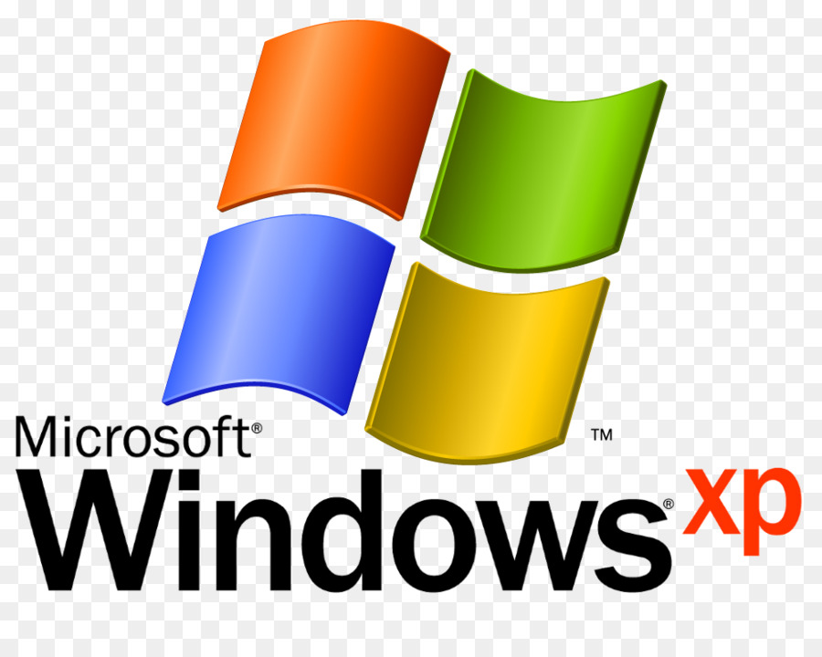

ВНИМАНИЕ - НЕОБХОДИМО ВНИМАТЕЛЬНО ПРОЧЕСТЬ!
Данное Лицензионное соглашение с конечным пользователем ("Лицензионное соглашение с конечным пользователем") является юридическим соглашением между вами (физическим или юридическим лицом) и изготовителем ("Изготовитель") компьютерной системы или компонента компьютерной системы ("ОБОРУДОВАНИЕ"), вместе с которым вы приобрели программные продукты Microsoft, указанные в наклейке "Сертификат подлинности" (Certificate of Authenticity, COA), имеющейся на ОБОРУДОВАНИИ или на документации по соответствующему продукту ("ПРОГРАММНОЕ ОБЕСПЕЧЕНИЕ"). ПРОГРАММНОЕ ОБЕСПЕЧЕНИЕ включает компьютерное программное обеспечение Microsoft и может включать соответствующие носители, печатные материалы, "онлайновую" или электронную документацию и службы Интернета. Следует, однако, отметить, что использование всех программ, документации и служб Интернета, включенных в данное ПРОГРАММНОЕ ОБЕСПЕЧЕНИЕ или доступных с его помощью и имеющих свои собственные лицензионные соглашения и условия использования, регулируется такими соглашениями и условиями использования, а не данным Лицензионным соглашением с конечным пользователем. Условия печатного Лицензионного соглашения с конечным пользователем, которое может поставляться с ПРОГРАММНЫМ ОБЕСПЕЧЕНИЕМ, заменяют собой условия любого электронного Лицензионного соглашения с конечным пользователем. Данное Лицензионное соглашение с конечным пользователем действительно и предоставляет права конечному пользователю ТОЛЬКО В ТОМ СЛУЧАЕ, если ПРОГРАММНОЕ ОБЕСПЕЧЕНИЕ подлинно и имеет Сертификат подлинности. Более подробные сведения о проверке подлинности программного обеспечения можно получить на веб-узле http://www.microsoft.com/piracy/howtotell.

ЕСЛИ ВЫ УСТАНАВЛИВАЕТЕ, КОПИРУЕТЕ ПРОГРАММНОЕ ОБЕСПЕЧЕНИЕ ИЛИ ИСПОЛЬЗУЕТЕ ЕГО КАКИМ-ЛИБО ДРУГИМ СПОСОБОМ, ТЕМ САМЫМ ВЫ ПОДТВЕРЖДАЕТЕ СВОЕ СОГЛАСИЕ СОБЛЮДАТЬ УСЛОВИЯ ДАННОГО ЛИЦЕНЗИОННОГО СОГЛАШЕНИЯ С КОНЕЧНЫМ ПОЛЬЗОВАТЕЛЕМ. Если Вы не согласны с условиями данного Лицензионного соглашения с конечным пользователем, Вы не можете использовать и копировать это ПРОГРАММНОЕ ОБЕСПЕЧЕНИЕ и должны немедленно выяснить у Изготовителя порядок возврата неиспользованных продуктов и получения денежного возмещения в соответствии с правилами возврата продуктов Изготовителя. ЛИЦЕНЗИЯ НА ПРОГРАММНОЕ ОБЕСПЕЧЕНИЕ Термин "КОМПЬЮТЕР" в этом документе эквивалентен термину "ОБОРУДОВАНИЕ" (если ОБОРУДОВАНИЕ представляет собой одну компьютерную систему) или обозначает компьютерную систему, с которой работает ОБОРУДОВАНИЕ (если ОБОРУДОВАНИЕ является компонентом компьютерной системы).
1. ПРЕДОСТАВЛЕНИЕ ЛИЦЕНЗИИ. Изготовитель предоставляет вам следующие права при условии выполнения вами всех условий настоящего Лицензионного соглашения с конечным пользователем:
1.1. Установка и использование. Вы можете устанавливать, использовать, отображать и запускать только одну копию и осуществлять доступ только к одной копии ПРОГРАММНОГО ОБЕСПЕЧЕНИЯ на КОМПЬЮТЕРЕ. В каждый момент времени ПРОГРАММНОЕ ОБЕСПЕЧЕНИЕ может использоваться не более чем на двух (2) процессорах на КОМПЬЮТЕРЕ одновременно, если в Сертификате подлинности не указано большее количество. 1.2. ПРОГРАММНОЕ ОБЕСПЕЧЕНИЕ как компонент КОМПЬЮТЕРА - передача прав. Данная лицензия не подлежит совместному использованию несколькими пользователями, передаче другим лицам или одновременному использованию на нескольких компьютерах. ПРОГРАММНОЕ ОБЕСПЕЧЕНИЕ предоставляется в пользование по лицензии вместе с КОМПЬЮТЕРОМ как единый интегрированный продукт и может использоваться только с КОМПЬЮТЕРОМ. Вы не имеете права использовать ПРОГРАММНОЕ ОБЕСПЕЧЕНИЕ, если оно не сопровождается ОБОРУДОВАНИЕМ. Вы можете навсегда передать другому лицу все свои права по данному Лицензионному соглашению с конечным пользователем только в случае безвозвратной продажи или передачи КОМПЬЮТЕРА и при условии, что у вас не останется никаких копий ПРОГРАММНОГО ОБЕСПЕЧЕНИЯ. Если ПРОГРАММНОЕ ОБЕСПЕЧЕНИЕ является обновлением, передаче подлежат и все предыдущие версии ПРОГРАММНОГО ОБЕСПЕЧЕНИЯ. Передача должна также включать наклейку "Сертификат подлинности". Передача не может быть опосредованной (например, через консигнацию). До передачи предполагаемый новый пользователь Программного обеспечения должен подтвердить свое согласие со всеми условиями данного Лицензионного соглашения с конечным пользователем. 1.3. Обязательная активация. Действие прав, предоставляемых данным Лицензионным соглашением с конечным пользователем, прекращается через тридцать (30) дней с момента вашей первоначальной установки ПРОГРАММНОГО ОБЕСПЕЧЕНИЯ, если вы не предоставили необходимую информацию для активации своей лицензионной копии, как это предлагается сделать при установке ПРОГРАММНОГО ОБЕСПЕЧЕНИЯ. Активацию ПРОГРАММНОГО ОБЕСПЕЧЕНИЯ можно выполнить через Интернет или по телефону. Звонки могут быть платными. Если вы модифицируете компьютерное оборудование или вносите изменения в ПРОГРАММНОЕ ОБЕСПЕЧЕНИЕ, может потребоваться повторная активация ПРОГРАММНОГО ОБЕСПЕЧЕНИЯ. Данное ПРОГРАММНОЕ ОБЕСПЕЧЕНИЕ включает средства, препятствующие его использованию без лицензии. Корпорация Майкрософт будет использовать эти средства для проверки наличия у вас лицензионной копии ПРОГРАММНОГО ОБЕСПЕЧЕНИЯ. Если у вас нет лицензии на ПРОГРАММНОЕ ОБЕСПЕЧЕНИЕ, вы не можете устанавливать это ПРОГРАММНОЕ ОБЕСПЕЧЕНИЕ и его последующие обновления. Microsoft Licensing, GP, Microsoft Ireland Operations Limited и/или Microsoft (China) Co. Limited (вместе - "MS"), а также корпорация Майкрософт и ее дочерние компании не будут собирать во время этого процесса никакой информации с вашего КОМПЬЮТЕРА, по которой можно было бы установить вашу личность. 1.4. Подключение устройств. Вы имеете право подключить к КОМПЬЮТЕРУ до пяти (5) компьютеров или других электронных устройств (каждое из них - "Устройство") для использования одной или нескольких из следующих служб ПРОГРАММНОГО ОБЕСПЕЧЕНИЯ: файловых служб (File Services), служб печати (Print Services), служб IIS (Internet Information Services), службы ICS (Internet Connection Sharing) и телефонных служб. В эти пять разрешенных соединений входят любые непрямые соединения, созданные с помощью "мультиплексирования" либо другого программного обеспечения или оборудования, обеспечивающих пулинг или объединение подключений. Это ограничение (максимум 5 соединений) не распространяется на другие виды использования ПРОГРАММНОГО ОБЕСПЕЧЕНИЯ, например на синхронизацию данных между Устройством и КОМПЬЮТЕРОМ, при условии, что в каждый момент времени только один пользователь осуществляет доступ к ПРОГРАММНОМУ ОБЕСПЕЧЕНИЮ, использует, отображает или запускает его. Этот пункт 1.4 не дает вам прав доступа к Сеансу КОМПЬЮТЕРА с какого-либо Устройства. Под "Сеансом" понимается любое использование ПРОГРАММНОГО ОБЕСПЕЧЕНИЯ, обеспечивающее функциональные возможности, аналогичные тем, которые предоставляются конечному пользователю, взаимодействующему с КОМПЬЮТЕРОМ с помощью любой комбинации периферийных устройств ввода, вывода и отображения. 1.5. Программы Remote Assistance и NetMeeting. ПРОГРАММНОЕ ОБЕСПЕЧЕНИЕ включает технологии Remote Assistance ("удаленный помощник") и NetMeeting (аудио- и видеоконференции), которые позволяют осуществлять прямой удаленный доступ к ПРОГРАММНОМУ ОБЕСПЕЧЕНИЮ или приложениям, установленным на КОМПЬЮТЕРЕ (иногда называемом "главным устройством"), с других Устройств. Если вы используете Remote Assistance или NetMeeting (или любое другое программное обеспечение, предоставляющее аналогичные функциональные возможности для аналогичных целей), то вы можете делить Сеанс с другими пользователями без каких-либо ограничений на количество подключенных Устройств и без приобретения дополнительных лицензий на ПРОГРАММНОЕ ОБЕСПЕЧЕНИЕ. Чтобы выяснить, можно ли использовать приложение корпорации Майкрософт или другого производителя совместно с программой Remote Assistance или NetMeeting без дополнительной лицензии, следует обратиться к лицензионному соглашению, сопровождающему программное обеспечение, или к соответствующему лицензиару. Данное Лицензионное соглашение с конечным пользователем не дает разрешения на использование технологий Microsoft Remote Desktop (или другого программного обеспечения, предоставляющего аналогичные функциональные возможности для аналогичных целей) для создания на КОМПЬЮТЕРЕ Сеанса связи с каким-либо Устройством. Эти технологии предоставляются по лицензии с ОС Windows XP Professional Edition. За исключением случаев, когда это явно разрешено вышеуказанными программами NetMeeting и Remote Assistance, лицензия на ПРОГРАММНОЕ ОБЕСПЕЧЕНИЕ не может использоваться несколькими пользователями или одновременно на нескольких компьютерах (рабочих станциях, терминалах или других устройствах). 1.6. Резервное копирование. ВЫ МОЖЕТЕ СОЗДАТЬ ТОЛЬКО ОДНУ РЕЗЕРВНУЮ КОПИЮ ПРОГРАММНОГО ОБЕСПЕЧЕНИЯ. Вы можете использовать одну (1) резервную копию только для архивирования и переустановки ПРОГРАММНОГО ОБЕСПЕЧЕНИЯ на КОМПЬЮТЕРЕ. ВЫ НЕ ИМЕЕТЕ ПРАВА СОЗДАВАТЬ КАКИЕ-ЛИБО другие копии Программного обеспечения и сопровождающих его печатных материалов, кроме случаев, явно указанных в этом Лицензионном соглашении с конечным пользователем или предусмотренных местным законодательством. Запрещается предоставлять компакт-диск или резервную копию в ПРОКАТ, В аренду, ВО ВРЕМЕННОЕ ПОЛЬЗОВАНИЕ иЛИ передавать эти материалы другим лицам каким-либо иным способом. 2. АВТОМАТИЧЕСКИЕ СЛУЖБЫ ИНТЕРНЕТА. Функции ПРОГРАММНОГО ОБЕСПЕЧЕНИЯ, описанные ниже, включаются по умолчанию для подключения к компьютерным системам корпорации Майкрософт по Интернету без уведомления пользователя. Если вы не отключили эти функции и используете их, это означает, что вы согласны на их использование. Корпорация Майкрософт не использует эти функции для сбора какой-либо информации, по которой можно было бы установить вашу личность или связаться с вами. Более подробную информацию об этих функциях можно найти в Заявлении о защите личных сведений по адресу http://go.microsoft.com/fwlink/?LinkId=25243. 2.1. Средства обновления Windows. Если вы подключаете какое-то оборудование к своему КОМПЬЮТЕРУ, на нем может не быть драйверов, необходимых для связи с таким оборудованием. Средства обновления, встроенные в ПРОГРАММНОЕ ОБЕСПЕЧЕНИЕ, могут получить нужные драйверы у корпорации Майкрософт и установить их на ваше устройство. Вы можете отключить эти средства обновления. 2.2. Средства работы с содержимым веб-ресурсов. Если используется стандартная конфигурация ПРОГРАММНОГО ОБЕСПЕЧЕНИЯ и вы подключены к Интернету, некоторые средства ПРОГРАММНОГО ОБЕСПЕЧЕНИЯ включаются автоматически для извлечения и отображения информационного содержимого из компьютерных систем корпорации Майкрософт. Если вы включаете одно из таких средств, оно использует стандартные протоколы Интернета, которые передают тип операционной системы, сведения об обозревателе и код языка вашего КОМПЬЮТЕРА в компьютерную систему корпорации Майкрософт, чтобы содержимое правильно отображалось для КОМПЬЮТЕРА. Эти средства работают только в случае, если вы их активируете, но их использование необязательно (вы можете их отключить). Примерами таких средств являются каталог Windows Catalog, мастер поиска Search Assistant, а также рубрики и средства поиска в центре справки и поддержки. 2.3. Цифровые сертификаты. ПРОГРАММНОЕ ОБЕСПЕЧЕНИЕ использует цифровые сертификаты, основанные на стандарте x.509. Эти цифровые сертификаты подтверждают подлинность пользователей Интернета, посылая зашифрованную информацию в соответствии со стандартом x.509. Программное обеспечение извлекает сертификаты и обновляет списки отозванных сертификатов. Эти средства безопасности работают только тогда, когда вы пользуетесь Интернетом. 2.4. Средство автоматического обновления корневого каталога сертификатов (Auto Root Update). Средство Auto Root Update обновляет список надежных центров сертификации. Вы можете отключить средство Auto Root Update. 2.5. Проигрыватель Windows Media. Некоторые функции проигрывателя Windows Media автоматически связываются с компьютерными системами корпорации Майкрософт, если вы пользуетесь проигрывателем Windows Media или его функциями, а именно: функциями, которые (А) осуществляют поиск новых кодеков, если на КОМПЬЮТЕРЕ нет кодеков, необходимых для воспроизведения содержимого (эту функцию можно отключить), и (Б) проверяют наличие новых версий проигрывателя Windows Media (эта функция работает только в то время, когда вы используете проигрыватель Windows Media). 2.6. Технология защиты Windows Media Digital Rights Management. Для защиты целостности содержимого веб-узлов ("Защищенное содержимое") поставщики содержимого используют технологию защиты Windows Media Digital Rights Management ("WM-DRM"), чтобы их интеллектуальная собственность в таком содержимом, включая материалы, защищенные авторским правом, не была незаконно присвоена. Части этого ПРОГРАММНОГО ОБЕСПЕЧЕНИЯ и приложения третьих лиц (например, мультимедийные проигрыватели) используют WM-DRM ("Программное обеспечение WM-DRM") для воспроизведения Защищенного содержимого. Если защита с помощью Программного обеспечения WM-DRM была скомпрометирована, владельцы Защищенного содержимого ("Владельцы Защищенного содержимого") могут попросить корпорацию Майкрософт отозвать право Программного обеспечения WM-DRM на копирование, показ или воспроизведение Защищенного содержимого. Отзыв этого права не влияет на способность Программного обеспечения WM-DRM воспроизводить незащищенное содержимое. Список отозванного Программного обеспечения WM-DRM посылается на ваш КОМПЬЮТЕР каждый раз, когда вы загружаете из Интернета лицензию на Защищенное содержимое. Вместе с такой лицензией корпорация Майкрософт может загружать на ваш КОМПЬЮТЕР списки отозванного Программного обеспечения WM-DRM от имени Владельцев Защищенного содержимого. Владельцы Защищенного содержимого могут также потребовать от вас обновления некоторых компонентов WM-DRM в ПРОГРАММНОМ ОБЕСПЕЧЕНИИ ("Обновления WM DRM"), прежде чем вы сможете осуществить доступ к их материалам. Если вы попытаетесь воспроизвести такое содержимое, Программное обеспечение WM DRM корпорации Майкрософт уведомит вас о необходимости Обновления WM-DRM и попросит подтвердить операцию, прежде чем загружать Обновление WM-DRM. Программное обеспечение WM-DRM других производителей может делать то же самое. Если вы отказались от обновления, доступ к содержимому, требующему Обновления WM-DRM, будет невозможен, но вы сможете по прежнему осуществлять доступ к незащищенному содержимому, а также к Защищенному содержимому, не требующему этого обновления. Возможности WM DRM, связанные с Интернетом (например, приобретение новых лицензий и выполнение необходимого обновления WM-DRM), можно отключить. Если они отключены, вы сможете по-прежнему воспроизводить Защищенное содержимое при условии, что действительная лицензия на такое содержимое уже хранится на КОМПЬЮТЕРЕ. 3. СОХРАНЕНИЕ ПРАВА СОБСТВЕННОСТИ И ПРОЧИХ ПРАВ. Изготовитель, MS и их поставщики (включая корпорацию Майкрософт) оставляют за собой все права, не предоставленные вам явно по условиям этого Лицензионного соглашения с конечным пользователем. Это ПРОГРАММНОЕ ОБЕСПЕЧЕНИЕ защищено авторским правом и другими законами и соглашениями о правах на интеллектуальную собственность. Право собственности, авторские права и другие права на интеллектуальную собственность в отношении ПРОГРАММНОГО ОБЕСПЕЧЕНИЯ принадлежат Изготовителю, MS и их поставщикам (включая корпорацию Майкрософт). ПРОГРАММНОЕ ОБЕСПЕЧЕНИЕ не продается, а предоставляется в пользование по лицензии. 4. ОГРАНИЧЕНИЕ НА ВСКРЫТИЕ ТЕХНОЛОГИИ, ДЕКОМПИЛЯЦИЮ И ДЕАССЕМБЛИРОВАНИЕ. Вы не имеете права на вскрытие технологии, декомпиляцию и деассемблирование ПРОГРАММНОГО ОБЕСПЕЧЕНИЯ, за исключением тех случаев и только в той мере, в какой это явно разрешено применимым законодательством, несмотря на данное ограничение. 5. ЗАПРЕТ НА ПЕРЕДАЧУ ВО ВРЕМЕННОЕ ПОЛЬЗОВАНИЕ И КОММЕРЧЕСКОЕ ИСПОЛЬЗОВАНИЕ. Запрещается предоставлять это ПРОГРАММНОЕ ОБЕСПЕЧЕНИЕ в прокат, в аренду и во временное пользование, а также использовать его для оказания сетевых услуг третьим лицам на коммерческой основе. 6. РАЗДЕЛЕНИЕ НА КОМПОНЕНТЫ. Данное ПРОГРАММНОЕ ОБЕСПЕЧЕНИЕ лицензируется как единый продукт. Разделение продукта на компоненты для использования на нескольких компьютерах запрещено. 7. Распознавание речи и рукописного текста. Если ПРОГРАММНОЕ ОБЕСПЕЧЕНИЕ содержит компоненты, распознающие речь или рукописный текст, следует понимать, что распознавание речи или почерка - это по сути статистический процесс и ему присущи ошибки распознавания, поэтому вы сами должны предусмотреть обработку таких ошибок, контролировать процесс распознавания и исправлять ошибки. Ни изготовитель, ни MS, ни корпорация Microsoft или их поставщики не несут ответственности за ущерб вследствие ошибок распознавания речи и рукописного текста. 8. ВЫБОР ЯЗЫКОВОЙ ВЕРСИИ. Изготовитель может предоставить вам возможность один раз выбрать одну из двух или более языковых версий ПРОГРАММНОГО ОБЕСПЕЧЕНИЯ в процессе начальной установки ПРОГРАММНОГО ОБЕСПЕЧЕНИЯ. В этом случае вы имеете право использовать только одну (1) из имеющихся языковых версий. Использовав какую-либо языковую версию, вы уже не можете пользоваться никакой другой языковой версией, которая могла быть загружена в КОМПЬЮТЕР Изготовителем. Независимо от вышесказанного, если Изготовитель решил предоставить вам интерфейс Multilingual User Interface ("MUI") для определенных языковых версий ПРОГРАММНОГО ОБЕСПЕЧЕНИЯ с дополнительной языковой поддержкой, вышеуказанное ограничения, согласно которому вы можете выбрать и использовать только одну языковую версию, не применяется, если вы (А) признаете, что интерфейс MUI и соответствующая языковая поддержка являются частью ПРОГРАММНОГО ОБЕСПЕЧЕНИЯ, (Б) вы используете интерфейс MUI с ПРОГРАММНЫМ ОБЕСПЕЧЕНИЕМ и (В) вы обязуетесь выполнять все условия данного Лицензионного соглашения с конечным пользователем. 9. НЕСКОЛЬКО ЛИЦЕНЗИОННЫХ СОГЛАШЕНИЙ С КОНЕЧНЫМ ПОЛЬЗОВАТЕЛЕМ И СЕРТИФИКАТОВ ПОДЛИННОСТИ. В комплект ПРОГРАММНОГО ОБЕСПЕЧЕНИЯ может входить несколько версий этого Лицензионного соглашения с конечным пользователем, например переводы на разные языки и версии на разных носителях (в пользовательской печатной документации и в самом программном обеспечении). В этом случае вы имеете право использовать только одну копию ПРОГРАММНОГО ОБЕСПЕЧЕНИЯ, на которую предоставлен Сертификат подлинности. Если КОМПЬЮТЕР поступает более, чем с одним (1) Сертификатом подлинности на операционную систему корпорации Майкрософт, вы имеете право использовать каждую операционную систему корпорации Майкрософт, для которой предоставлен Сертификат подлинности. 10. Товарные знаки. Данное лицензионное соглашение с конечным пользователем не предоставляет вам никаких прав на товарные знаки и знаки обслуживания Изготовителя, MS или их поставщиков (включая корпорацию Майкрософт). 11. ПОДДЕРЖКА ПРОДУКТОВ. MS, корпорация Майкрософт и их аффилированные или дочерние компании не предоставляют никакой поддержки по данному ПРОГРАММНОМУ ОБЕСПЕЧЕНИЮ. За поддержкой по ПРОГРАММНОМУ ОБЕСПЕЧЕНИЮ обращайтесь в службу поддержки Изготовителя по адресу, указанному для этой цели в документации на ОБОРУДОВАНИЕ. Если у вас возникнут вопросы по поводу этого Лицензионного соглашения с конечным пользователем или вы пожелаете связаться с Изготовителем по другому вопросу, адрес можно будет найти в документации на ОБОРУДОВАНИЕ. 12. ССЫЛКИ НА ВЕБ-УЗЛЫ ТРЕТЬИХ ЛИЦ. С помощью ПРОГРАММНОГО ОБЕСПЕЧЕНИЯ вы можете переходить на веб-узлы третьих лиц. Веб-узлы третьих лиц не находятся под управлением MS или корпорации Майкрософт, поэтому MS и корпорация Майкрософт не несут ответственности за содержимое этих веб-узлов, включая имеющиеся там ссылки, а также за какие-либо изменения и обновления на этих веб-узлах. MS и корпорация Майкрософт не несут ответственности за данные, полученные с узлов или от служб третьих лиц через широковещательную передачу или любым другим способом. MS и корпорация Майкрософт предоставляют эти ссылки на веб-узлы третьих лиц только для вашего удобства, и включение ссылки не означает, что MS или корпорация Майкрософт одобряет содержимое веб-узла. 13. ДОПОЛНИТЕЛЬНОЕ ПРОГРАММНОЕ ОБЕСПЕЧЕНИЕ И СЛУЖБЫ. Данное Лицензионное соглашение с конечным пользователем распространяется на обновления, дополнения, добавляемые компоненты, службы поддержки продукта или компоненты служб Интернета, которые относятся к ПРОГРАММНОМУ ОБЕСПЕЧЕНИЮ и могут быть получены вами от Изготовителя, MS, корпорации Майкрософт или их дочерних компаний после приобретения первоначальной копии ПРОГРАММНОГО ОБЕСПЕЧЕНИЯ, за исключением случаев, когда вы принимаете обновленные условия или когда такие обновления, дополнения, добавляемые компоненты, службы поддержки продукта или компоненты служб Интернета регулируются другим соглашением. Если Дополнительные компоненты не сопровождаются другими условиями и предоставлены вам MS, корпорацией Майкрософт или их дочерними компаниями, эти компании предоставляют вам лицензию на условиях данного Лицензионного соглашения с конечным пользователем со следующими исключениями: (i) лицензиаром Дополнительных компонентов в этом Лицензионном соглашении с конечным пользователем будет не Изготовитель, а MS, корпорация Майкрософт или их дочерняя компания, поставляющая эти Дополнительные компоненты и (ii) В МАКСИМАЛЬНОЙ СТЕПЕНИ, ДОПУСКАЕМОЙ ПРИМЕНИМЫМ ЗАКОНОДАТЕЛЬСТВОМ, ДОПОЛНИТЕЛЬНЫЕ КОМПОНЕНТЫ И ВСЕ ОТНОСЯЩИЕСЯ К НИМ СЛУЖБЫ ПОДДЕРЖКИ (ЕСЛИ ОНИ ЕСТЬ) ПРЕДОСТАВЛЯЮТСЯ НА УСЛОВИЯХ "КАК ЕСТЬ И СО ВСЕМИ НЕИСПРАВНОСТЯМИ". НА ТАКИЕ ДОПОЛНИТЕЛЬНЫЕ КОМПОНЕНТЫ РАСПРОСТРАНЯЮТСЯ ТАКЖЕ ВСЕ ОСТАЛЬНЫЕ УСЛОВИЯ, КАСАЮЩИЕСЯ ОТКАЗА ОТ ПРЕДОСТАВЛЕНИЯ ГАРАНТИЙ, ОГРАНИЧЕНИЯ ОТВЕТСТВЕННОСТИ ЗА УЩЕРБ И ДРУГИЕ СПЕЦИАЛЬНЫЕ УСЛОВИЯ, ОПИСАННЫЕ НИЖЕ И/ИЛИ ПРЕДОСТАВЛЕННЫЕ ИНЫМ ОБРАЗОМ ВМЕСТЕ С ДАННЫМ ПРОГРАММНЫМ ОБЕСПЕЧЕНИЕМ. MS, корпорация Майкрософт и их дочерние компании оставляют за собой право прекратить оказание любых услуг Интернета, которые предоставлялись вам через ПРОГРАММНОЕ ОБЕСПЕЧЕНИЕ. 14. ОБНОВЛЕНИЯ. Если ПРОГРАММНОЕ ОБЕСПЕЧЕНИЕ обозначено как обновление, для его использования необходимо иметь лицензию на продукт, обозначенный MS или корпорацией Майкрософт как подлежащий обновлению. В контексте обновления термин "ОБОРУДОВАНИЕ" означает компьютерную систему или компонент компьютерной системы, с которыми вы получили Обновляемый продукт. ПРОГРАММНОЕ ОБЕСПЕЧЕНИЕ, помеченное как обновление, заменяет и/или дополняет Обновляемый продукт, приобретенный с ОБОРУДОВАНИЕМ, а в случае обновления программных продуктов Microsoft может и отключать их. После обновления вы уже не можете использовать первоначальную версию ПРОГРАММНОГО ОБЕСПЕЧЕНИЯ, которое подлежало обновлению (если не указано иное). Вы можете использовать обновленный продукт только в соответствии с условиями этого Лицензионного соглашения с конечным пользователем и только на этом ОБОРУДОВАНИИ. Если ПРОГРАММНОЕ ОБЕСПЕЧЕНИЕ является обновлением компонента из пакета программ, лицензия на который выдавалась как на единый продукт, ПРОГРАММНОЕ ОБЕСПЕЧЕНИЕ можно использовать и передавать другим лицам только в составе этого единого пакета и нельзя разделять для использования более, чем на одном компьютере. 15. ПРОГРАММНОЕ ОБЕСПЕЧЕНИЕ, ЗАПРЕЩЕННОЕ К ПЕРЕПРОДАЖЕ. ПРОГРАММНОЕ ОБЕСПЕЧЕНИЕ, помеченное как не предназначенное для перепродажи ("Not for Resale", "NFR"), не может перепродаваться, передаваться или использоваться для каких-либо целей, кроме демонстрации, тестирования или оценки. 16. ПРОГРАММНОЕ ОБЕСПЕЧЕНИЕ ДЛЯ УЧЕБНЫХ ЗАВЕДЕНИЙ. Чтобы пользоваться ПРОГРАММНЫМ ОБЕСПЕЧЕНИЕМ, обозначенным как Программное обеспечение для учебных заведений ("Academic Edition", или "АЕ"), вы должны быть Правомочным пользователем программного обеспечения для учебных заведений (Qualified Educational User). По вопросам правомочности использования таких продуктов обращайтесь по адресу: Microsoft Sales Information Center/One Microsoft Way/Redmond, WA 98052-6399 или в дочернюю компанию корпорации Майкрософт в вашей стране. 17. УВЕДОМЛЕНИЯ ПО ИСПОЛЬЗОВАНИЮ СТАНДАРТА MPEG-4 VISUAL. В ПРОГРАММНОЕ ОБЕСПЕЧЕНИЕ входит технология кодирования визуальных сигналов MPEG-4. Эта технология является также форматом сжатия видеоданных. Компания MPEG LA, L.L.C. требует включения следующего уведомления в связи с этой технологией: ИСПОЛЬЗОВАНИЕ ЭТОГО ПРОДУКТА ЛЮБЫМ СПОСОБОМ В СООТВЕТСТВИИ СО СТАНДАРТОМ MPEG-4 VISUAL ЗАПРЕЩЕНО, ЗА ИСКЛЮЧЕНИЕМ СЛУЧАЕВ, КОГДА ЭТО ИСПОЛЬЗОВАНИЕ ПРЯМО СВЯЗАНО (A) С ДАННЫМИ ИЛИ ИНФОРМАЦИЕЙ, (i) СГЕНЕРИРОВАННЫМИ ПОТРЕБИТЕЛЕМ, НЕ УЧАСТВУЮЩИМ В СВЯЗИ С ЭТИМ В КОММЕРЧЕСКОМ ПРЕДПРИЯТИИ, И БЕСПЛАТНО ПОЛУЧЕННЫМИ ОТ ТАКОГО ПОТРЕБИТЕЛЯ, И (ii) ПРЕДНАЗНАЧЕННЫМИ ИСКЛЮЧИТЕЛЬНО ДЛЯ ЛИЧНОГО ИСПОЛЬЗОВАНИЯ, И (B) С ДРУГИМИ ВИДАМИ ИСПОЛЬЗОВАНИЯ, КОТОРЫЕ ЛИЦЕНЗИРУЮТСЯ ОТДЕЛЬНО КОМПАНИЕЙ MPEG LA, L.L.C. Со всеми вопросами по этому уведомлению обращайтесь в компанию MPEG LA, L.L.C., 250 Steele Street, Suite 300, Denver, Colorado 80206; телефон 303 331.1880; факс 303 331.1879; www.mpegla.com. 18. ОГРАНИЧЕНИЯ НА ЭКСПОРТ. Вы признаете, что на ПРОГРАММНОЕ ОБЕСПЕЧЕНИЕ распространяется экспортное законодательство США. Вы обязуетесь соблюдать все нормы международного и национального законодательства, применимого к ПРОГРАММНОМУ ОБЕСПЕЧЕНИЮ, включая Правила управления экспортом США (U.S. Export Administration Regulations), а также ограничения по конечным пользователям, способам и регионам использования продукта, существующие в США и других странах. Дополнительную информацию можно получить по адресу